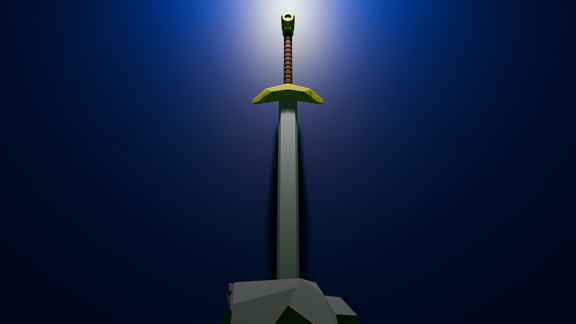

Like everything else in this class this past semester, I learned how to use blender for the first time. Probably because it is the closest to sculpting of all the programs learned this year, but I think Blender was one of the more fun programs. Though the manipulating geometry of certain shapes get kind of janky, creating 3d print templates or just 3d space is pretty cool. The photo shows a digital object that I created, which a sword in a stone type deal. Sharpened edges and beveling certain shapes were alittle tricky, but I think it still was pretty good.